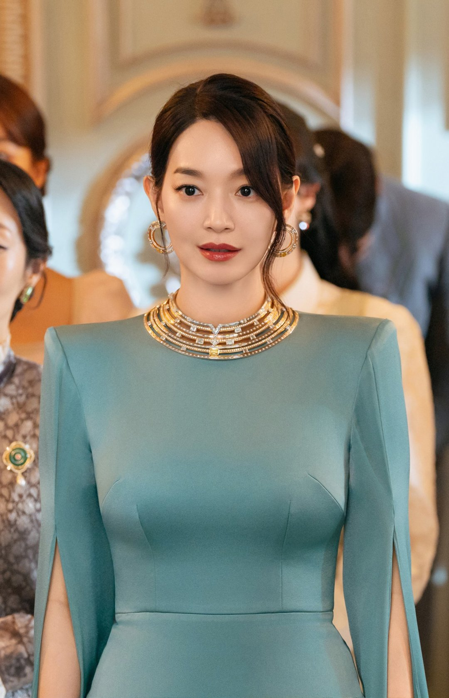
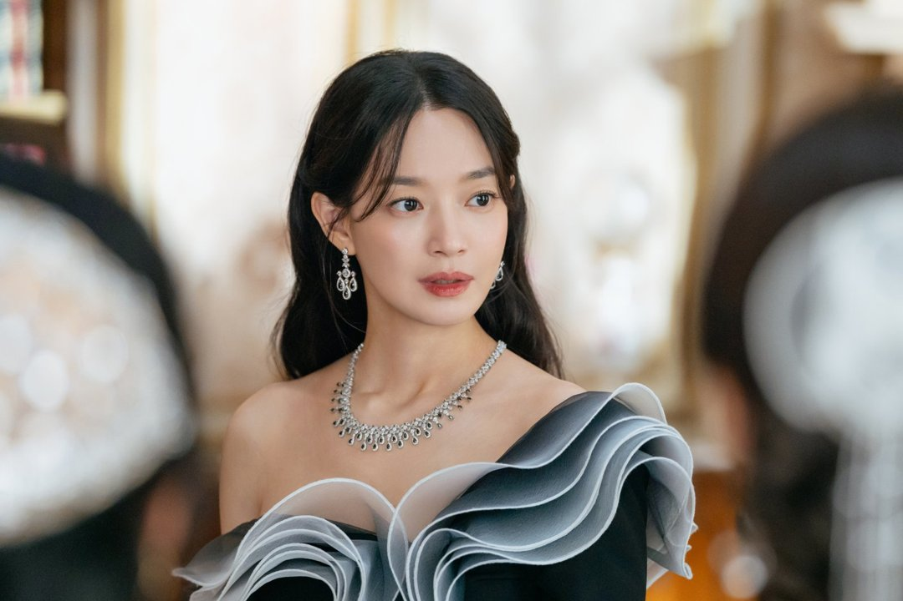
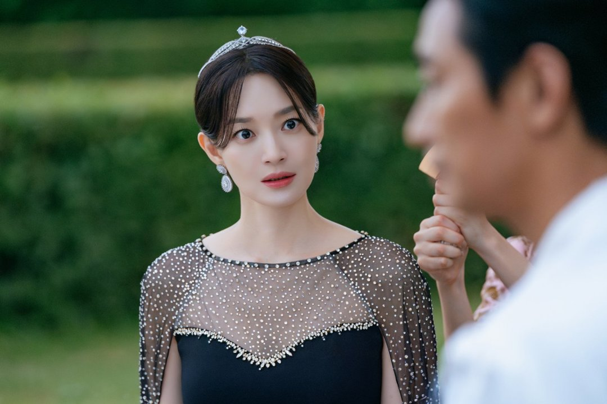
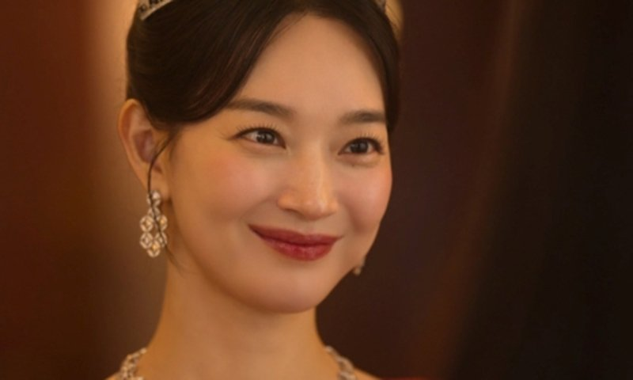
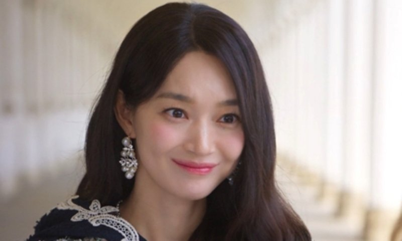
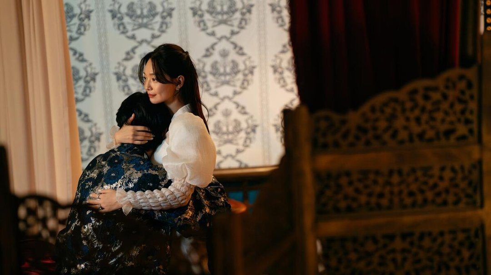

화장실 한 번 가는 것도 계획을 세워야 했던 황후. 신민아가 '재혼 황후' 나비에를 연기하며 겪은 일이에요. 13일 공개된 유튜브 '채널 조정석'에서 신민아가 털어놓은 촬영 뒷이야기를 두 가지로 추렸어요.
📷 사진 1 자리
▲ 디즈니+ '재혼 황후'에서 황후 나비에를 연기한 신민아 · 사진=월트디즈니 컴퍼니 코리아 제공
영화제 때나 입던 드레스를 매일
신민아는 살면서 영화제 같은 자리가 아니면 드레스를 입을 일이 없었는데, 이번 작품에서는 정말 많이 입었다고 했어요. 하나같이 무겁고 장식이 많은 옷이었다고요.
📷 사진 2 자리
▲ '재혼 황후' 속 나비에의 드레스 차림 · 사진=월트디즈니 컴퍼니 코리아 제공
가장 곤란했던 건 화장실이었어요. 드레스를 입은 채로는 가기 어려워서, 편한 옷으로 갈아입는 틈에 맞춰 다녀왔다고 해요.
📷 사진 3 자리
▲ 티아라와 장식 드레스 차림의 나비에(신민아) · 사진=월트디즈니 컴퍼니 코리아 제공
어떤 옷들이었는지는 가격에서도 드러나요. 나비에가 입은 드레스 가운데에는 한 벌에 1800만 원대인 수입 드레스도 있어요. 장식이 많은 고가 드레스를 갈아입어 가며 촬영을 이어 갔으니, 화장실 이야기가 괜한 엄살은 아니었던 셈이죠.
상대역 대신 새 모형을 보며 찍은 감정신
두 번째 고충은 상대역이었어요. 신민아는 '재혼 황후'를 찍으며 온갖 새 모형을 앞에 두고 감정신을 찍어야 했다고 말했어요. 웃기기도 하고 정말 힘들기도 했다고요.
📷 사진 4 자리
▲ '재혼 황후' 속 신민아 · 사진=월트디즈니 컴퍼니 코리아 제공
그래서 이 이야기는 '이종석이 아니라 새 모형과 멜로를 찍었다'는 제목으로 여러 매체에 실렸어요. 화면에서는 애틋한 장면이라도, 현장에서는 사람 대신 모형을 보며 눈빛을 만들어야 했던 장면이 많았다고 해요.
조정석과 12년 만에, 이봉련과는 황후와 시녀로
이번 영상이 반가웠던 이유는 출연진 조합이에요. 조정석과 신민아는 영화 '나의 사랑 나의 신부' 이후 12년 만에 다시 만났어요. 조정석은 신민아가 자신이 작품에서 처음 결혼한 상대였다고 돌아봤어요.
📷 사진 5 자리
▲ '재혼 황후' 속 신민아 · 사진=월트디즈니 컴퍼니 코리아 제공
신민아도 칭찬으로 답했어요. 그동안 호흡을 맞춘 남자 배우 중 조정석이 "제일 좋은 사람"이라고 여러 곳에서 말해 왔다고요.
함께 나온 이봉련은 '재혼 황후'에서 나비에 곁을 지키는 엘리자를 맡았어요. 극 중 가장 가까운 편이 현실에서도 같은 자리에 앉은 셈이에요.
📷 사진 6 자리
▲ '재혼 황후' 속 나비에(신민아) · 사진=월트디즈니 컴퍼니 코리아 제공
정리하면서 가장 눈에 띈 건 화면 속 화려함과 현장의 불편함이 정확히 반대였다는 점이에요. 드레스 장면을 다시 볼 때 이 옷을 입고 하루를 버텼다는 걸 떠올리면 나비에의 꼿꼿한 자세가 조금 다르게 보일 거예요.
신민아가 꼽은 '재혼 황후' 촬영의 어려움은 무거운 드레스와 새 모형을 상대로 한 감정신이었어요. '재혼 황후'는 디즈니+에서 볼 수 있고, 조정석·이봉련과의 대화 전체는 유튜브 '채널 조정석'에 올라와 있어요.





